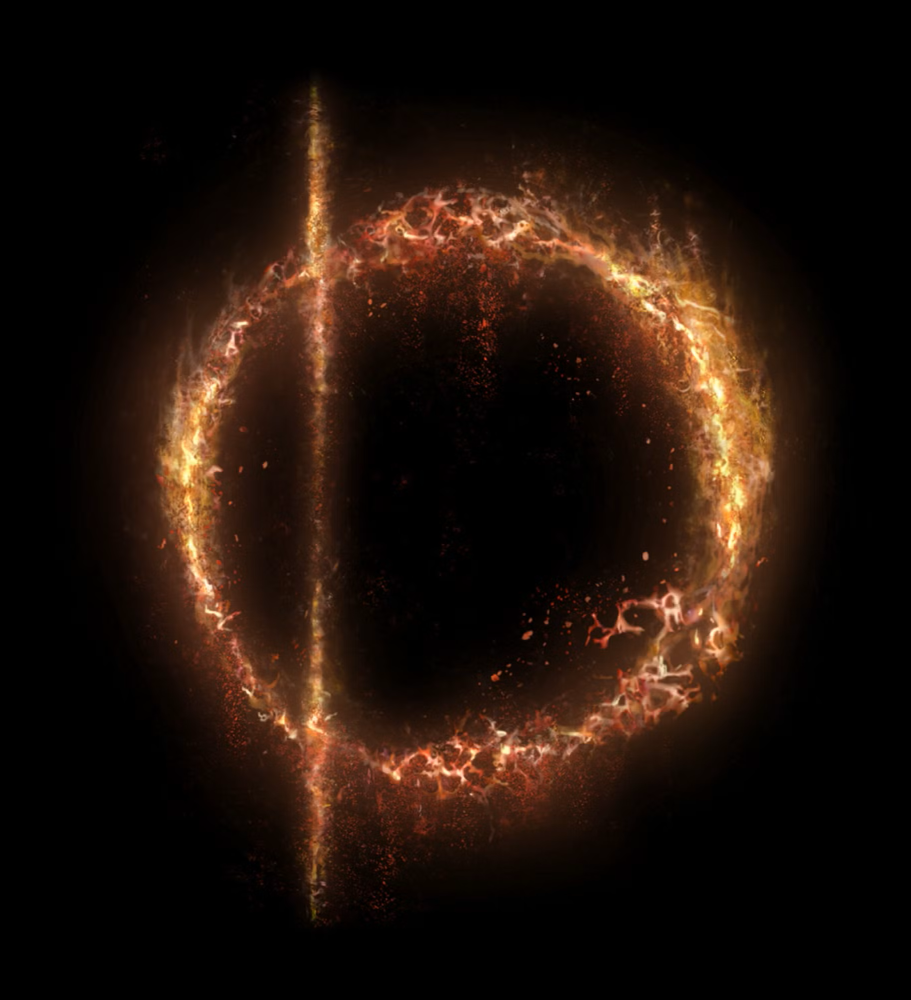
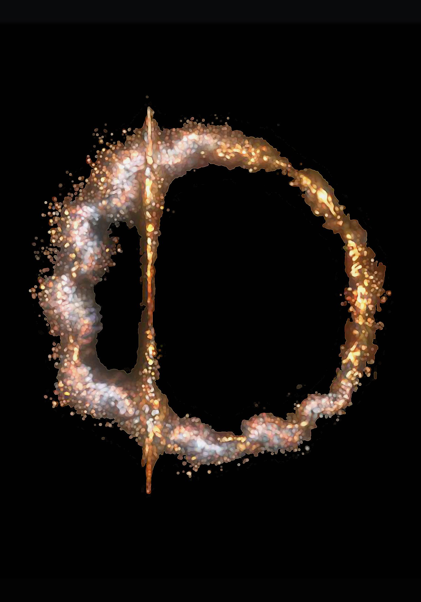
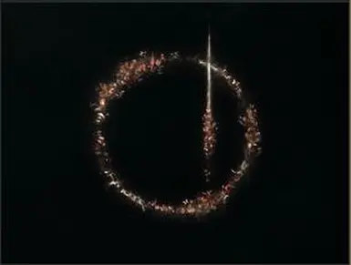

| Great Runes | How to Obtain | Effects |
 Grafted Grafted | Defeat Godrick | Add 5 points to each stat |
| Starscourge | Defeat Rahdan | Increase Maximum HP, FP, and Stamina by 15% |
| Unborn | Defeat Rennala | Allow the ability to redistruibute Stat points |
| Blasphemous | Defeat Rykard | Heal 5% HP when and enemy dies |
| Prince | Defeat Morgott | Increase Maximum HP by 25% |
| Blood | Defeat Mohg | Grants Blessing of blood to phantoms.
Heal 10% per kill, 20% attack increase if blood-loss in area.
While Invading with rune active, Grant the great rune blessing to Montsers nearby.
|
| Rot | Defeat Melania | Regain lost HP With each hit after getting hit |